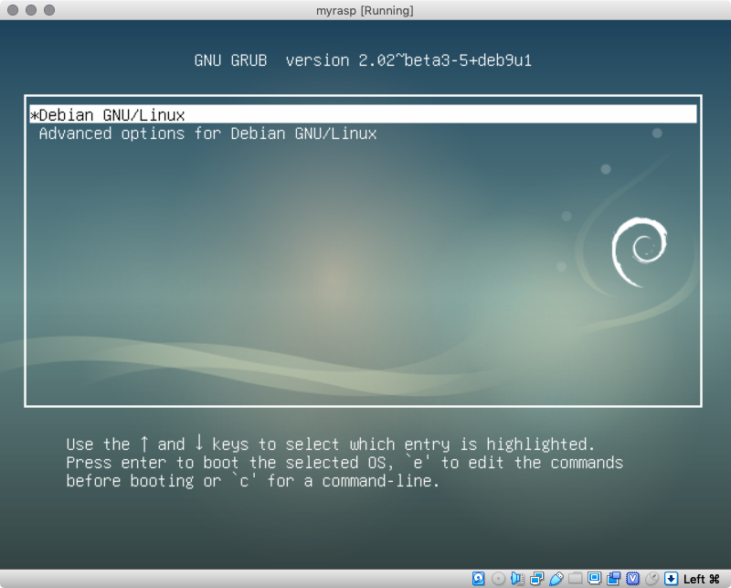
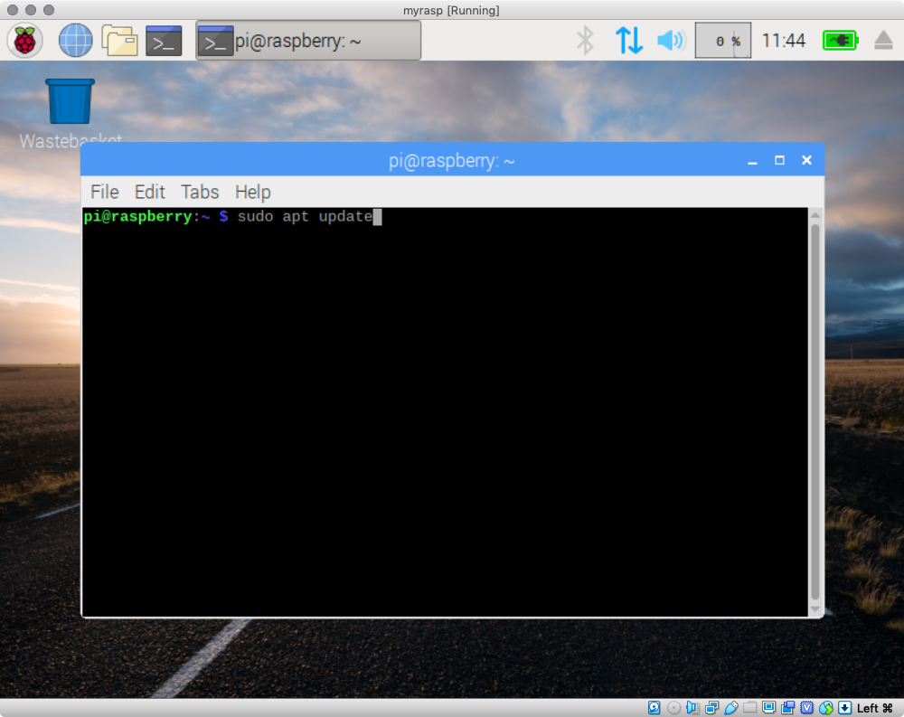
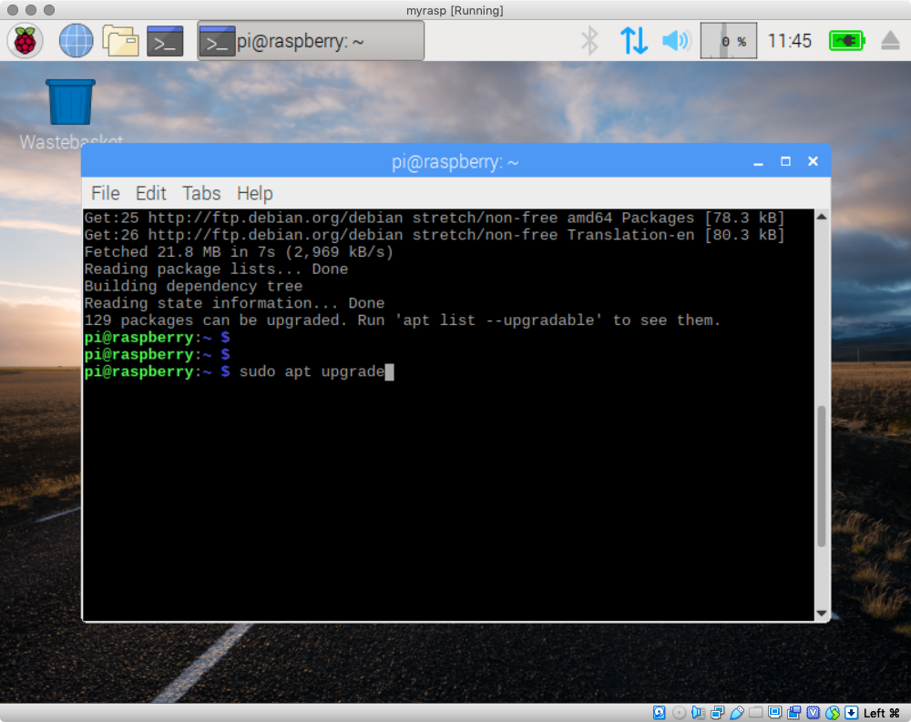
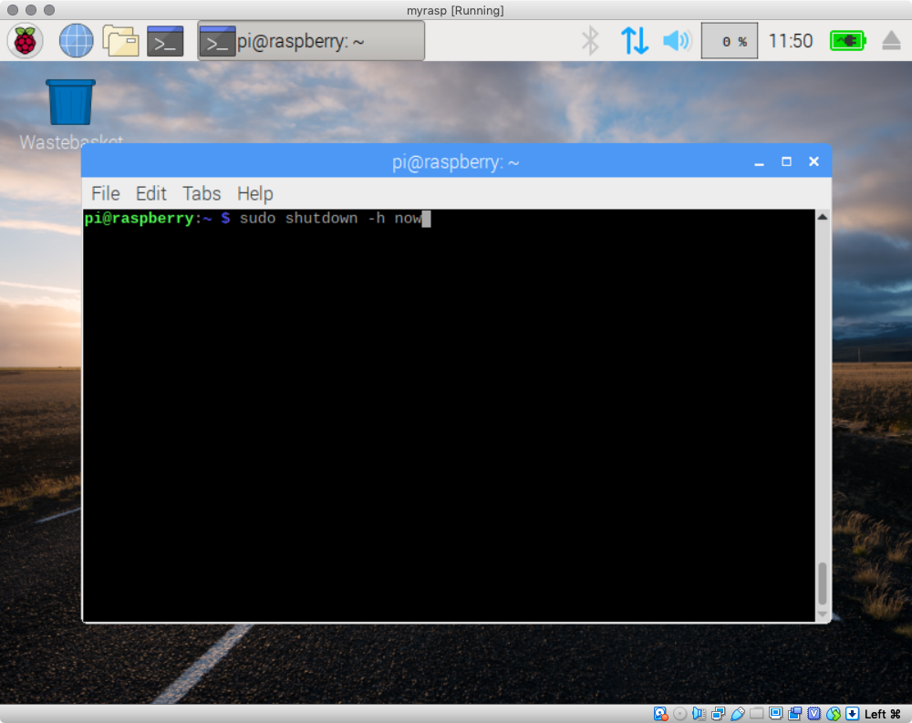

Installing Raspbian on a virtual Machine
This step-by-step tutorial is intended to give a quick overview on how to “have” a Raspberry Pi in your personal computer. It uses Oracle’s Virtual Box as a basis for virtualisation but many other solutions exist.
After following these steps you should have a basic setup very similar to what we use in the labs., with connectivity only to your PC. The idea is to use this virtual machine (VM) in headless mode and use ssh to test commands and configurations. There are many options to configure your VM but they will not be covered here.
A final note, you may experiment with more than one VM and create networks to test different networking tools and configuration we will talk about. You may also try other Linux distributions if you are considering changing your operating system or having a dual boot setup in your PC.
Downloading the software
Download VirtualBox
Simply navigate to virtualbox.org on your browser and download it. Afterwards install it as you would install any other software in your computer.
Download Raspbian image
You can download the necessary image from https://www.raspberrypi.org/downloads/raspberry-pi-desktop/. Save it until the installation is complete and you can delete it afterwards (you can duplicate VMs even without this image file). We will use this image in the next section.
Creating your virtual machine
New VM
- Start by pressing the “New” button as seen in the figure below. This will open a dialog where you will setup the initial configurations of your VM.
- Now you need to choose a name for your VM.
- The field Machine Folder: corresponds to the folder where your VM will be stored.
- For the Type and Version of your VM you should select “Linux” and “Debian (64-bit)” even though other options are also possible. It should look something like the image below.
- After pressing Continue you need to select how much RAM your VM is allowed to use. 512 MB is the minimum amount of recommended memory but using 1024 MB may be better.
- Now, after pressing Continue again, you need to create your virtual hard disk. Just press Create.
- Afterwards press Continue to select a common disk format (VDI)
- Press Continue again for selecting a dynamically allocated disk file (fixed size is also okay).
- Finally, select the folder where you would like to save your hard disk and how large this file should be, followed by Create. Note: make sure you choose a virtual disk with enough space (at least 8 GB) and that the folder you selected is located in a physical disk with enough storage space.
At this stage you should see a new virtual machine in VirtualBox.
Installation boot
Before we start our new VM we need to add the installation medium (the Raspbian image file you downloaded earlier) and perform the installation. The following steps will guide you through this process.
- Start by selecting the new VM and then click on the settings button.
- In the dialog that opens click on the storage tab.
- Now in the controller IDE tree select the “Empty” line and click on the CD image highlighted in the figure below. This will allow you to select the downloaded Raspbian image (named something like 2019-04-11-rpd-x86-stretch.iso).
- Still inside the settings menu you may want to select the display pane and scale the screen (it is typically quite small so scaling to 150% can be helpful). Note however that the screen resolution can be configured directly in Linux (e.g. during boot) but this way is easier.
- After pressing OK you should see the selected iso file as an optical drive of your VM.
- Press the start button to initiate the boot process.
- After starting the VM you will see a boot menu as shown below. Select the Install option with the arrow keys and press ENTER.
- At this point you can select your keyboard (press ‘n’) for quickly moving into the Norwegian keyboard. Note that you can proceed with the default keyboard as long as you remember some keys are in slightly different places.
- At this stage the disk needs to be partitioned to create the file system. Note that it corresponds to the virtual disk it will not affect your computer. Select Guided - use entire disk and press Enter.
- Press Enter again to choose the only available (virtual) disk.
- Even though several partitions can be used, to separate files/folders with different purposes, using only one partition is simpler.
- Confirm the created partitions (1 partition for your files and 1 partition for swaping when you run out of RAM).
- Finally select Yes and press Enter to confirm the partition setup.
- After some time installing the necessary components you will have to complete the installation by installing a boot loader (GRUB). Select Yes and press Enter.
- Now select where the boot loader should be installed (in our case it should be /dev/sda).
- This is the final step of the installation. Just press Continue and you don’t need to worry about removing the installation media (VirtualBox does that for us)
First boot
- After the reboot you will something like the image below. You may notice the name Debian which a very famous distribution upon which the Raspbian distribution is based.

- The first time you start your machine you will have the opportunity to go through a quick set up but may also skip it by pressing Cancel. However, if you want to change your keyboard press Next and skip only the check for updates (it is faster in the command line).
- Before anything else, open a terminal and change your password with
passwd.
- Now we should update our system. In a terminal type
sudo apt update followed by sudo apt upgrade.


- To finalise the process and prepare the VM for TTM4175 shut it down and enter the VM settings.

- In the Network pane change your network adapter to be connected to you PC only. This will create a local area network between your PC and your VM, which will be perfect for our experiments and labs. Notice that this will also prevent access to the Internet.
- Start again your VM, check its IP address and from now on you can start using it in headless mode and save computing resources. Using
ssh to access your VM will the easiest way to test some commands and will allow a straightforward copy+paste between your PC and the VM.
Additional Steps
Headless Start
To start in headless mode you need only to press the start button arrow to select other options as seen below.
Save Disk Space
To save some disk space you may remove some of the many applications bundled with Raspbian and which we will not need. A suggestion is:
sudo apt-get remove --purge libreoffice* scratch* sonic-pi sense-emu-tools bluej geany geany-common greenfoot
sudo apt-get clean
sudo apt-get autoremove